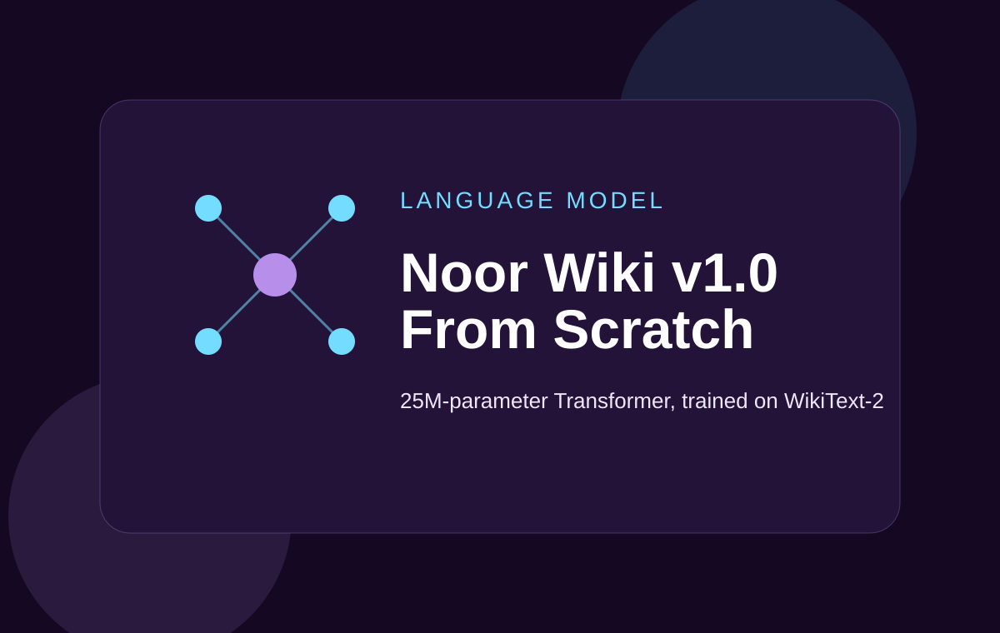

Role
ML Developer
A ~25-million-parameter decoder-only Transformer built from scratch on WikiText-2 (25,178,880 parameters) — the program's first model trained on a dataset other than TinyStories, trained and evaluated locally on his own hardware and published on Hugging Face.

ML Developer
Model development project — third in the 90-day model program
Published on Hugging Face — final validation loss 6.1644 (perplexity 475.52), test loss 6.1804 (perplexity 483.16).
Noor Wiki v1.0 is the third project in Noorullah's 90-day AI model development program (24 November 2026 – 22 February 2027), building an independent model portfolio from small from-scratch models up to 1–6B fine-tuned and aligned models. It is a ~25-million-parameter decoder-only Transformer built from scratch on WikiText-2 (25,178,880 parameters), trained and evaluated locally on his RTX 5060 in about 2 minutes (165 steps). It was published on Hugging Face on 27 November 2026.